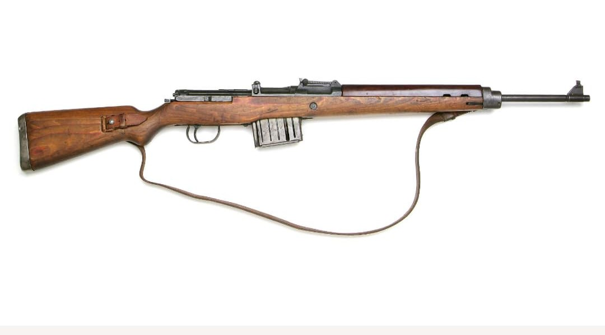
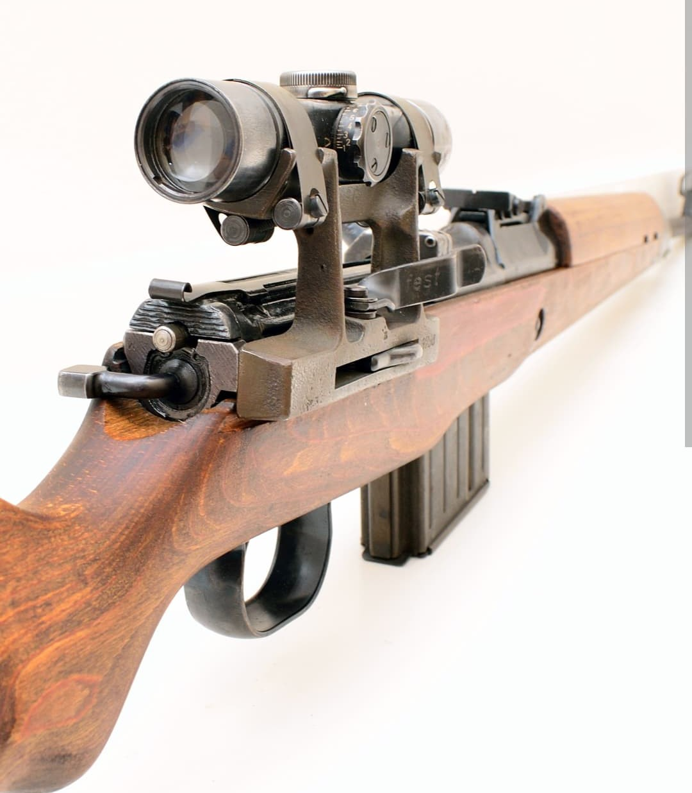
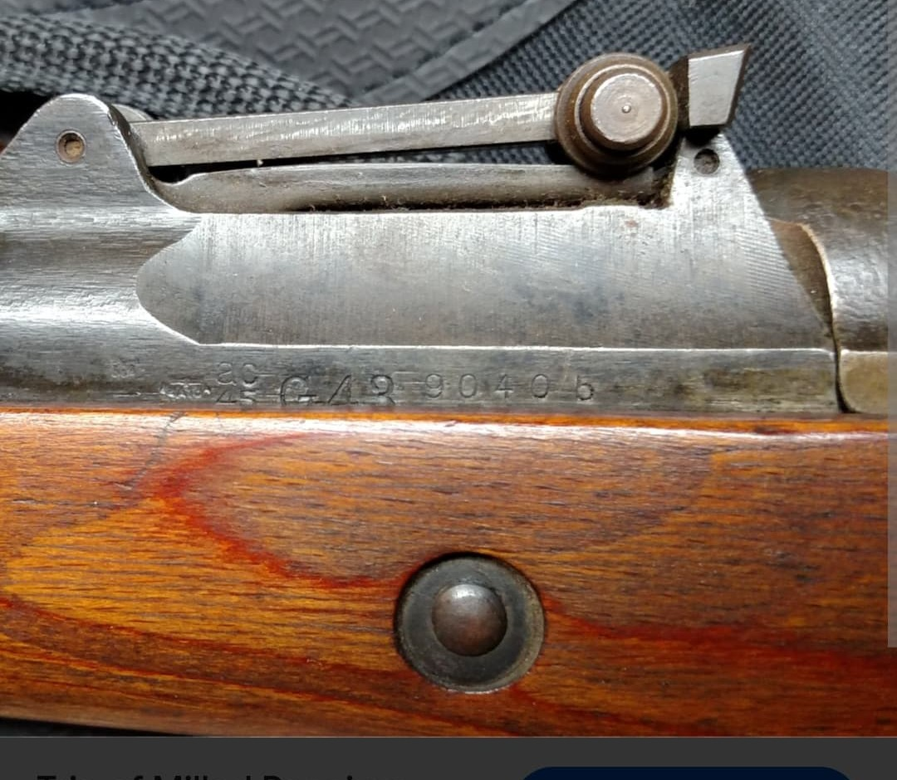
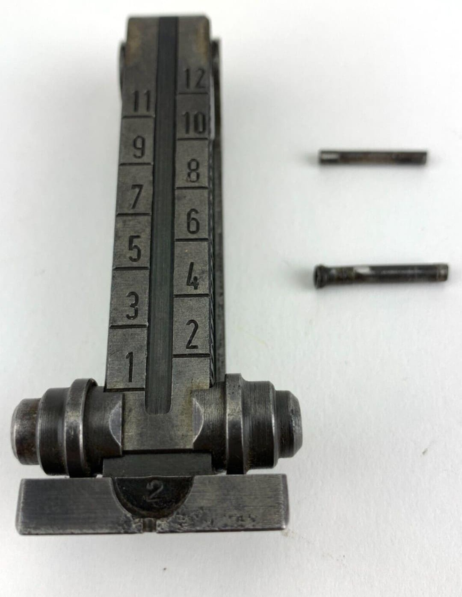
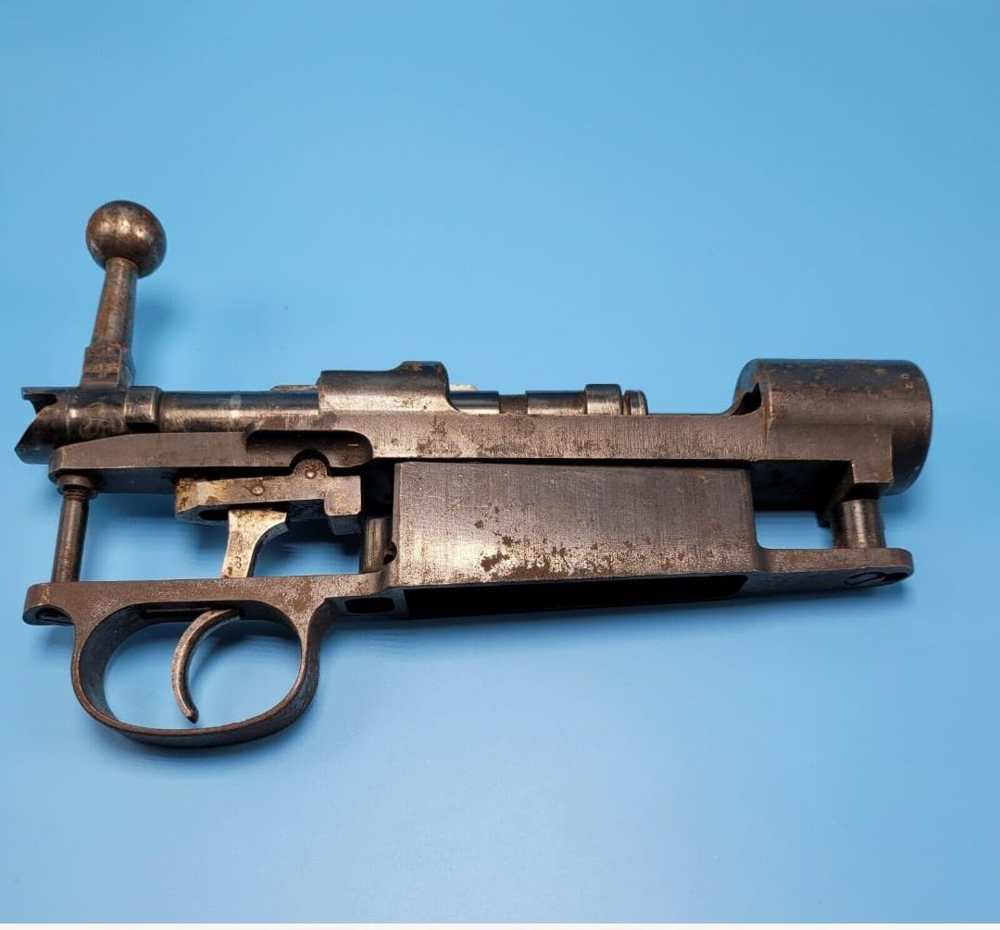

Le Gewehr 43 (G43) est le fusil semi-automatique standard développé par l’Allemagne nazie pour remplacer progressivement le Karabiner 98k. Chambré en 7,92×57 mm Mauser, il est conçu pour offrir une cadence de tir plus élevée tout en restant robuste et relativement simple à produire.
Il est utilisé sur tous les fronts à partir de 1943, notamment par l’infanterie et les tireurs d’élite équipés de lunettes de visée.
Le G43 reprend l’expérience acquise avec le Gewehr 41, mais simplifie le système de récupération des gaz et adopte un chargeur amovible de 10 coups. Il reste chambré en 7,92×57 mm Mauser, ce qui permet l’utilisation de la même munition que le K98k.
Sa crosse en bois, son boîtier massif et son chargeur détachable en font une arme moderne pour l’époque, adaptée à la guerre de mouvement et aux combats à moyenne distance.

Le Gewehr 43 est souvent équipé d’une lunette de visée ZF4, ce qui en fait une arme de tireur d’élite efficace. La lunette est montée sur un rail latéral spécifique fixé au boîtier.
Cette configuration permet aux tireurs d’élite allemands de disposer d’une arme semi-automatique avec optique, offrant une cadence de tir supérieure au K98k à verrou.

Les marquages du G43 indiquent le fabricant, l’année de production, le numéro de série et divers poinçons militaires (Waffenamt). On trouve notamment des codes comme duv, ac, bcd, qve, correspondant à différentes usines.
Selon la période, le marquage du modèle peut passer de G43 à K43, sans changement majeur de conception mais avec une simplification de production.

Le G43 est équipé d’une hausse réglable graduée de 1 à 12, permettant un réglage de la distance de tir. Cet organe de visée mécanique reste utilisé même sur les versions équipées de lunette, en secours.

Le Karabiner 98k est un fusil à verrou, alors que le Gewehr 43 est semi-automatique. Les deux armes utilisent la même munition, mais leur mécanique est très différente.
Le K98k repose sur le célèbre verrou Mauser, tandis que le G43 utilise un système à gaz avec culasse mobile et chargeur amovible. Le G43 offre une cadence de tir supérieure, mais reste plus complexe à produire et à entretenir.
